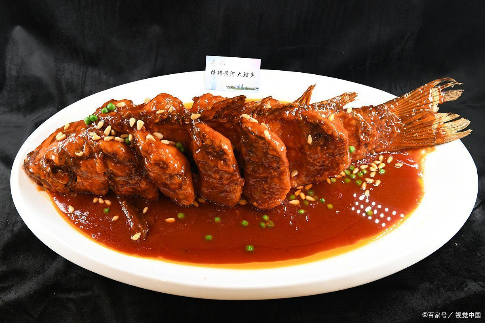
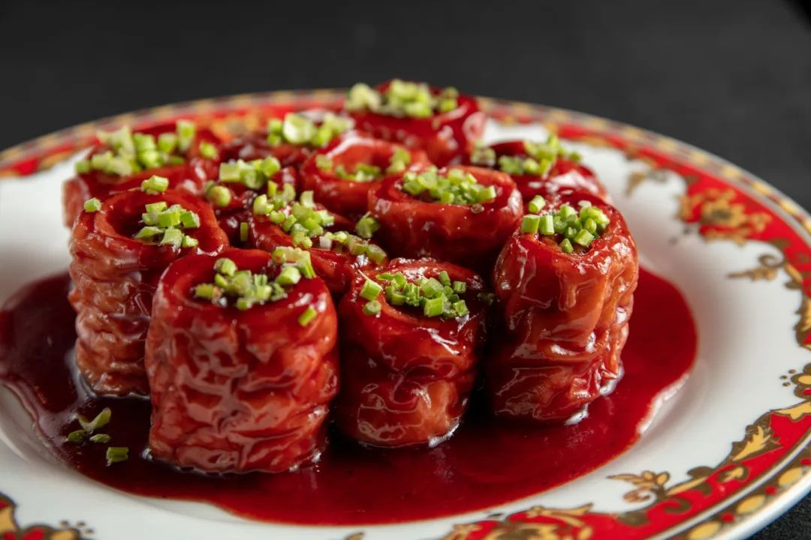
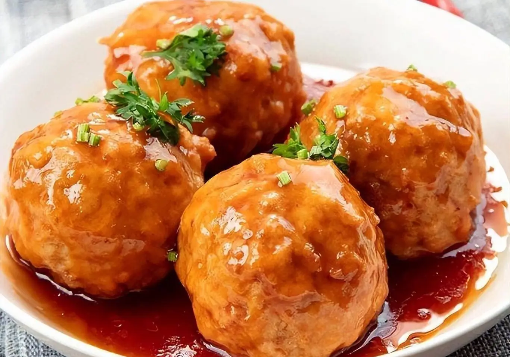

🍛 代表菜色介紹

糖醋鯉魚
為魯菜代表性名菜之一，選用活鯉魚劃花刀後炸至金黃，再淋上酸甜適中的糖醋汁，色澤鮮亮、外酥裡嫩，魚肉細膩，香氣撲鼻。

九轉大腸
是山東傳統名菜之一，以肥腸為主料，經過多道工序製作，色澤紅亮、入口柔韌，口味酸、甜、鹹、辣、香俱全，層次豐富，是魯菜工藝的代表。

葱燒海參
魯菜經典名菜，選用鮮嫩海參，搭配濃郁蔥香與鮮美高湯燉製而成。口感軟糯彈牙，湯汁醇厚，色澤紅亮，是宴席上的珍饈佳餚。

四喜丸子
又稱「紅燒獅子頭」，代表吉祥圓滿。用豬絞肉製成大丸子，炸後紅燒，湯汁濃郁、味道鮮美，是山東婚宴與節慶常見的菜色。